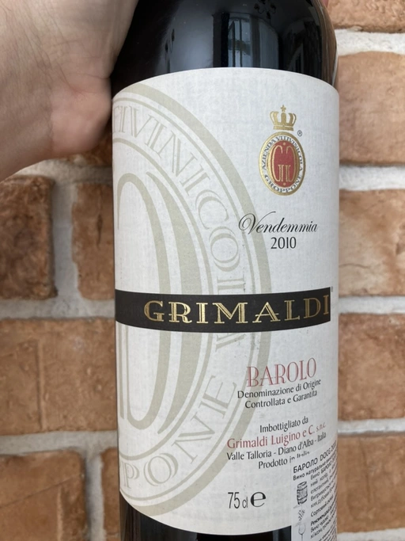

- Type
- Red Still, Dry
- Producer
- Grimaldi
- Vintage
- 2010
- Location
- Italy, Barolo DOCG
- Grapes
- Nebbiolo
- Alcohol
- 13.5
- Sugar
- 1.5
- Price
- 1439 UAH
- Cellar
- N/A
Ratings
2022-10-30 - 7.50
The colour already reveals the age. Yet, in the nose, it’s pretty lively: bruised cherry, red flowers, pepper, dust tar notes and tomato stem. It slightly lacks balance: tannin is still rough, and the bitterness in the finish is offsetting. But overall, it’s good: it still has juice and fruit, and the aftertaste is long and jammy.